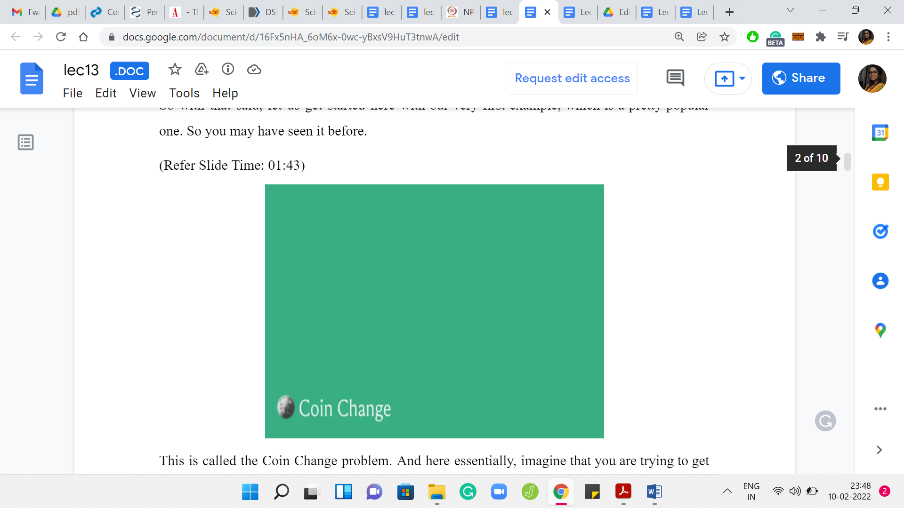
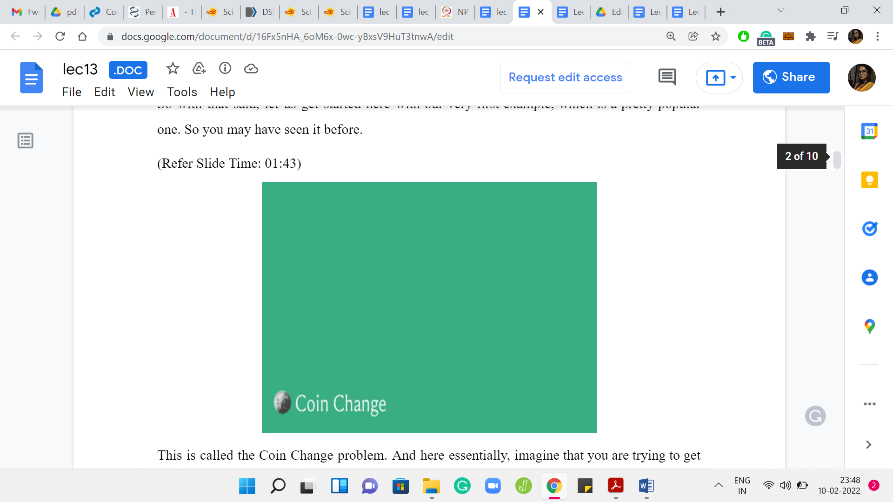
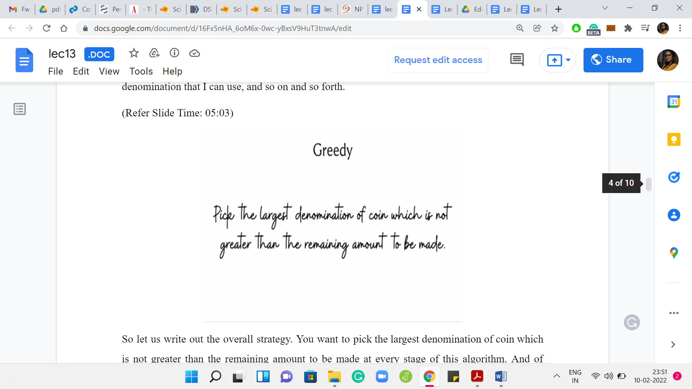
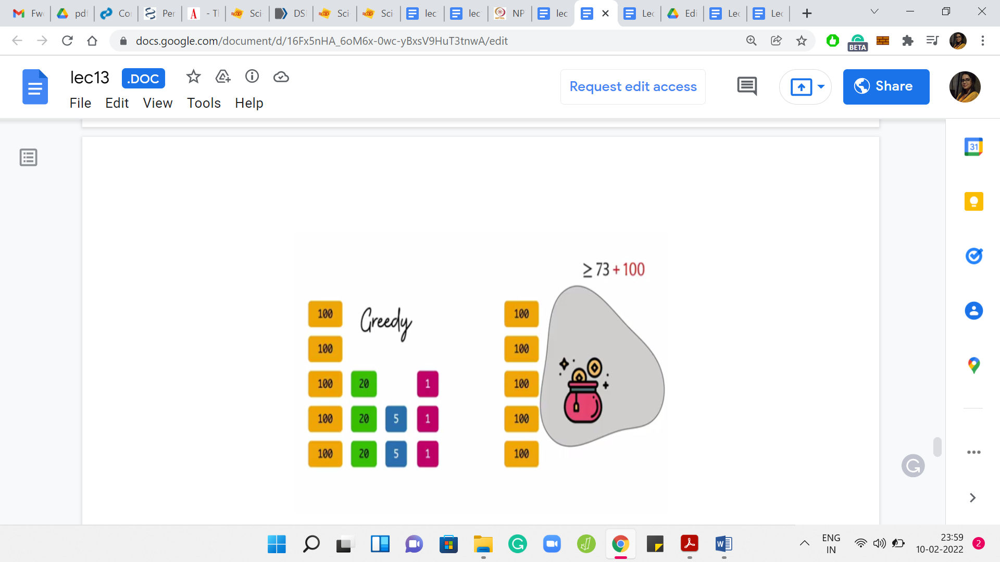

M 4 (When Greedy Does Not Work - Coin Change)
Lecture - 13
Greedy Algorithms - Module 4 (When Greedy Does Not Work - Coin Change)
(Refer Slide Time: 00:11)
 

Hello, and welcome to the final module in the third week of ‘Getting Started with Competitive Programming.’ This video is going to be slightly unusual in the sense that we will not be solving any specific contest problems as we normally do. Instead, we will just take a look at a few examples of situations where the natural greedy strategies that you might come up with for those situations actually end up not working.
This is just to really emphasize the point that a ‘Greedy Algorithm’ might look like a very tempting proposition, but it may in fact be wrong. Let us go through a few of these scenarios. There will be no real coding involved in any of these. Hopefully, in due course, we will be able to discover more sophisticated strategies, which would actually help you tackle the sort of problems that we will be talking about in this particular lecture.
In terms of logistics, this module is broken up into three shorter videos — each one featuring one example of a problem or a situation where there is a natural greedy strategy, and we will see that it does not work. In some sense, there is no suspense, you already know that the strategy is bound to fail. But I hope that you will still take your time to pause the video, and think about coming up with a counter-example yourself before it is revealed in the lecture.
With that said, let us get started here with our very first example, which is a pretty popular one. You may have seen it before. This is called the ‘Coin Change’ problem.
Here, essentially, imagine that you are trying to get some change for, say, 100 rupees, and you are at a cash counter. The cashier is trying to figure out how to generate 100 rupees from the notes that he or she has at his or her disposal at that time. It could be that you get two 50s, or you get three 20s and four 10s, or you get ten 10s or some such combination.
The optimization objective here is usually that you want to minimize the number of notes that are generated. You usually assume that you have an unlimited supply of notes in each specific denomination. A specific version of this problem did show up once on ‘Codeforces.’
(Refer Slide Time: 02:29)

This was problem A in Round number 492 in the Second Division. Let us just go over this problem statement here. You want to generate n dollars using bills of denominations 1, 5, 10, 20, and 100. The optimization objective is to minimize the number of bills that you use. It turns out that, here, the natural greedy strategy that you can think of actually does work. You might be thinking that there was a whole lot of false advertising at the start when I said, we would not be solving any contest problems and we will be looking at examples where ‘greedy’ does not work.
But it turns out that the reason ‘greedy’ works in this setting is because of a very special property of the denominations. In fact, we will see that once you do not have this special property, ‘greedy’ will no longer work. The reason I picked this as the opening example, is to show you how close you can come to a situation where ‘greedy’ does work for some specific variant if you have some extra special properties. But the moment you drop those structural assumptions, then ‘greedy’ ceases to work. All the more reason to be super careful.
I just wanted to draw up that contrast, which is why we are starting with this warm-up variant, where greedy does, in fact, work. Just to give you a sense of how to convince yourself that the greedy algorithm is correct, we will go over at least some hints for the proof of the correctness of the greedy algorithm in this setting. We will also try to tease out what is the important property that these denominations have that ensures that the greedy algorithm does work. Before we get to all that: What is the natural greedy algorithm?
If it is not clear already, then please take a minute here to pause the video and think about how you would come up with a greedy strategy to solve this problem. The natural greedy thing to do would probably be to use the largest bill that you can possibly use to knock out as much of your remaining task as possible. Remember, you are trying to generate ‘n’ dollars.
For instance, if ‘n’ is greater than 100, then I will probably reach out to 100 dollar bill first because that gives me the maximum leverage. It is only when the remaining amount that I have to generate falls below 100 that I will stop using the 100 dollar bills and turn to the next largest denomination that I can use, and so on and so forth.
(Refer Slide Time: 05:03)

Let us write out the overall strategy. You want to pick the largest denomination of coin, which is not greater than the remaining amount to be made at every stage of this algorithm. You stop once you have generated the entire amount that you were supposed to generate. Let us see how this plays out in a few examples.
(Refer Slide Time: 05:21)

Remember that the denominations are 1, 5, 10, 20, and 100. Suppose we want to generate 125. Then the first bill I would pick is a 100 dollar bill because 125 is greater than 100. Now since I have accounted for 100, I am left with 25. I can no longer use 100 dollar bill; I would have to use a 20 dollar bill. Once we have done that, we still have to generate 5 dollars more, and there is a 5 dollar bill so we will use that. You could confirm that there is no way of generating 125 using only two distinct bills of the given denominations. Suppose you want to generate 43, then the largest bill that you can use is 20 because 43 is less than 100. Let us throw in a 20 dollar bill to the mix. Now you are left with 23.
Again, you can pack in a 20 dollar bill. Now you are left with 3. You cannot use a 20 dollar bill or a 10 dollar bill or even a 5 dollar bill to generate 3 dollars. The only thing to do here is to use 3 one-dollar bills. That is the only valid thing to do at this point. Once again, take a moment here, just play around and see if you can do this with less than 5 bills for the amount: 43. The last example is, let us say, 10,000 dollars.
Notice that you can just keep using 100 dollar bills. You will have to use 100 of them to generate 10,000 and it should be visibly the best possible. That is what is going on with the greedy algorithm. Hopefully, the mechanics of ‘greedy’ are clear. But to see that this actually does always generate the smallest number of bills for this combination of denominations does require a bit of an argument.
Now, I will not go through a complete and formal proof. But I will just try to convey some intuition for what is going on. Sometimes these coin systems for which the greedy algorithm does produce the right answer are called Canonical Systems. A property that these canonical systems have is that if you look at the larger denominations, they are always divisible by all of the smaller ones. For instance, here, 100 is divisible by 20, 10, 5, and 1. 20 is divisible by 10, and 5 and 1, and so on. Let us see why this property might be useful to us.
(Refer Slide Time: 07:48)


Suppose that in some instance, your greedy algorithm produces a solution, and it looks like this. The specific numbers are not important here. Let us just imagine that this is some solution to some instance. Suppose somebody comes up with a competing optimal solution, which uses fewer bills, and let us say it is different from the greedy output. The point is that we want to get to a contradiction because we have assumed that there is a better optimal solution than what is produced by the greedy algorithm.
In particular, let us take a look at this optimal solution. Let us take a look at their first denomination for which the optimal solution has a different behavior from the greedy solution. Just to keep things simple, I am assuming here that the optimal solution uses fewer 100 dollar bills than the greedy solution does. This could have also been, say, 20 dollar bills. Maybe the optimal solution uses the same number of 100 dollar bills as the greedy solution but uses fewer 20 dollar bills, or it could be that it uses the same number of 100 and 20 dollar bills as the greedy solution, but fewer 5 dollar bills and so on.
In each case, the spirit of the argument will remain the same. Let us just work with this situation. Notice here, in this example, greedy uses five 100 dollar bills, and some optimal solution comes along, claiming to do better than the greedy solution. It is distinct from the greedy solution. Let us say that this was the first point of difference — it uses fewer 100 dollar bills.
What does the optimal solution do in terms of the composition of the other bills? We do not have any details here and for the most part, it will not really matter. What is important to know is the fact that the remaining amount in the optimal solution must add up to at least 100 plus whatever amount remains when you take away all the 100 dollar bills from the greedy solution. So the optimal solution which is competing with the greedy solution also has to generate a total amount of ‘n’ but now it is doing this with 100 dollar bill less. That is what we are assuming.
This remaining amount has to be whatever remains in the greedy solution after all 100 dollar bills have been removed that amount for sure but also plus another 100. Because this missing one 100 dollar bill has to be compensated for by the bills that come in from the remaining denominations. What we do know about this is, even though the exact composition of bills may be opaque and unknown to us, we know the total amount sitting here at least is 173 — that is the specific figure for this example here.
Because 100 is divisible by all of these smaller denominations. It is divisible by 1, 5, and 20. I know that if there is an amount of at least one 100 sitting here, then I can, in fact, find a subset of coins from here, which adds up to exactly 100.
Just take a moment to confirm that this makes sense. Once you see that you can do this, then what you could do is just eliminate this subset of coins, which add up to 100. Notice that you do not have to pick the subset in any special way. You can just pick any subset of coins that adds up to 100. You know that you will be picking at least two coins because the denominations here are smaller than 100. In fact, because the next largest denomination happens to be 20, you know that you will be picking at least 5 coins but that detail is not so relevant here.
(Refer Slide Time: 11:48)

What is important is that you are going to be discarding at least 2 coins and let us say you bring in one 100 dollar bill in exchange to compensate for what you have thrown away. Now notice that this is a solution, which manages exactly what the so-called optimal solution was managing, but with fewer bills. The claimed optimal solution was not optimal after all, which is a contradiction.
Now, of course, we have done this with some specific numbers and in a slightly specific way, assuming that the optimal differs from the greedy in the number of 100 dollar bills that it uses and it differs by exactly 1. Hopefully, even this specialized limited argument gives you a sense of why the greedy algorithm may be expected to be correct. Now you could take pen and paper and try to write out this argument in its full generality.
Try and appreciate where the divisibility property comes into play when you argue the correctness. All of this is leading up to the idea that for more general non-canonical coin systems, the greedy algorithm may not work. You could take a moment here again to try and come up with your own coin system where you do not have this divisibility property and try and figure out why it does not work.
(Refer Slide Time: 13:02)

As a hint, let me give you a coin system. Here is a coin system with 3 denominations, 1, 3, and 4. Can you come up with a choice of ‘n’ for which the greedy strategy will fail? Feel free to pause here for a moment and try to work through this. Here is a value of ‘n’ for which greedy will fail. Suppose you try to generate 6, the greedy algorithm will try to do its maximum leverage backing.
It will use one 4 dollar coin or bill and after this, you are still left with an amount of 2 to be generated. You cannot use 4. You also cannot use 3. The only choice you have is to use two 1 dollar bills. On the other hand, you can probably tell that this is not optimal because 6 can instead be generated with just two 3 dollar bills and that would be the optimal solution in this case. So, you can see that the greedy algorithm can land you in trouble in these more general settings.
It is a useful exercise to go back and see where the proof ideas that we had for the canonical systems, in fact, break down. Just try and pretend to be prove the greedy algorithm in the setting where you already know in advance that it does not work. Try to go through the experience of the step at which the proof in fact breaks down. So with that, we come to the end of the description of our first greedy failure. Now we are going to do a couple of more examples in the upcoming videos. So, I will see you there!